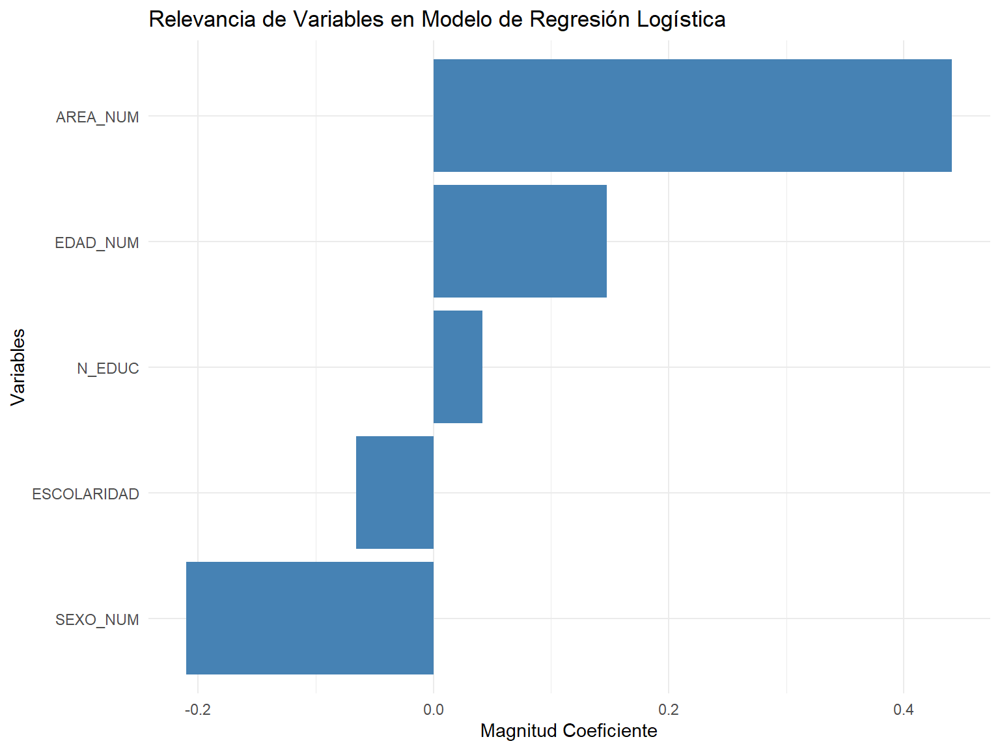

# Limpiamos nuestro entornorm(list =ls())# Activamos el renv para guardar información de los paquetes utilizadosif(!require(renv)){install.packages("renv")}library(renv)# Iniciamos el renvrenv::init()# Activamos función para instalar paquetesinstall_and_load <-function(package) {if (!require(package, character.only =TRUE)) { utils::install.packages(package)library(package, character.only =TRUE) }}# Lista de paquetes a ser instalados y cargadospackages <-c("rio","dplyr", "ggplot2", "RColorBrewer", "kableExtra", "ggcorrplot", "latex2exp","broom")# Aplicamos la función a cada paqueteinvisible(capture.output(sapply(packages, install_and_load)))# Actualizamos paquetes instalados en el renvrenv::snapshot()
Código
body {font-family:Arial,sans-serif;line-height:1.5;}h1 {color:#333333;}p {text-align:justify;}
1 Introducción
El presente proyecto se basa en una simulación relacionada con la falta de respuesta al CENSO 2017. A partir de esta base de datos, se seleccionó una muestra considerando las dimensiones de región, comuna, provincia, área, sexo, edad, nivel educacional, pertenencia a pueblos originarios y escolaridad, con el objetivo de predecir los comportamientos asociados a la no respuesta en dicho censo.
Código
# Nota Importante: Los datos utilizados en este análisis corresponden a una muestra del Censo 2017. # Esta muestra fue generada con el propósito de facilitar su manejo en plataformas como Google Colab y GitHub, # ya que la base de datos original del Censo es demasiado pesada para estas herramientas. # Para ello, se seleccionó aleatoriamente el 10% de la población de cada región, asegurando que los estadísticos # principales de cada variable se mantuvieran representativos y no sufrieran alteraciones significativas.## A continuación, se presenta el código utilizado para construir la muestra. Este se incluye como comentario, # dado que la base de datos "muestra" ya está almacenada en un repositorio en línea, por lo que no es necesario # ejecutarlo nuevamente.## censo <- read.csv(ruta_archivo, sep = ";", dec = ".", header = TRUE,# stringsAsFactors = FALSE)## muestra <- censo %>%# group_by(REGION) %>%# sample_frac(0.10) %>%# ungroup()## Comprobamos que los nombres de la BBDD original se mantienen en la BBDD# simplificada## names(muestra)## Realizamos un subset de datos, conservando sólo las variables más relevantes# para el análisis posterior.##muestra <- select(muestra, REGION, PROVINCIA, COMUNA, AREA,# P08, P09, P15, P16, ESCOLARIDAD)# URL del link de GitHub con la BBDD de muestraurl_archivo <-"https://github.com/DavidRodriguez-DS/ProyectoCenso/raw/refs/heads/master/_data/muestra.sav"# Descargamos nuestra BBDD de muestramuestra <-import(url_archivo)# Recodificación de variables# A partir de esta recodificación, le cambiamos el nombre a algunas de nuestras# variables de interés (P08, P09, P15 y P16). Se busca que las nuevas etiquetas# de tales variables representen con mayor claridad el tipo de datos que se# almacenan dentro de nuestras variables, facilitando el análisis posterior# de nuestros datos.# Análogamente, se procede a recodificar nuestras variables, resguardando# que las nuevas categorías generadas representen más claramente el sentido# de cada subgrupo de nuestras variables de interés. Así, por ejemplo,# vemos que en la variable que representa la territorialidad del levantamiento# de la información censal ("AREA"), a la primera categoría se le denomina# como "Urbano", mientras que a la segunda categoría como "Rural"# Observando el mismo procedimiento, pero con variables de tipo numérico,# vemos que la nueva variable "P_INDIGENA" - que en la base original figuraba# como "P16", opta por catalogar a todas las personas que respondieron sí# pertenecer a algún pueblo indígena chileno como 1 - sí ocurrencia del# fenómeno de interés -, mientras que a aquellas personas que aseveraron# no pertenecer al subgrupo de población indígena de nuestro país, se las# identificó con un 0, que implica la no ocurrencia del fenómeno de interés,# en este caso, pertenencia a población indígena.# La razón para asignar valores de 1 y 0 a esta variable reside en la posibilidad# de ocupar esta variable, posteriormente, en modelos predictivos de respuesta/# no respuesta del CENSO 2017, mediante modelos de regresión lineal y logística.muestra_rec <- muestra %>%mutate(AREA =recode(AREA, `1`="Urbano", `2`="Rural"),SEXO =recode(P08, `1`="Hombre", `2`="Mujer"),EDAD =case_when(as.numeric(P09) <=29~"Joven/Adulto Joven",as.numeric(P09) <=64~"Adulto",as.numeric(P09) >64~"Adulto Mayor" ),N_EDUC =na_if(P15, 98), # Elimina 98 como NAN_EDUC =na_if(N_EDUC, 99), # Elimina 99 como NAP_INDIGENA =case_when( P16 ==1~1, P16 ==2~0, P16 %in%c(98, 99) ~NA_real_# Maneja 98 y 99 como NA ),ESCOLARIDAD =na_if(ESCOLARIDAD, 98),ESCOLARIDAD =na_if(ESCOLARIDAD, 99) ) %>%select(-P08, -P09, -P15, -P16) # Elimina las variables originales# Frecuencia de no respuesta por regióntable(muestra_rec$REGION)# Como podemos observar, ya tenemos los datos de personas por región.# Con tal información, comenzamos a estructurar nuestra variable de No Respuesta# del CENSO.poblacion_region <-c(33056, 60753, 28617, 75759, 181590, 91456, 104495, 155680, 95722, 82871, 10316, 16653, 711281, 38484, 22607, 48061)# Se define una tasa de no respuesta que se aproxime al 4,7%. Ello en base# a proyecciones realizadas por INE, respecto a la tasa de omisión del# CENSO 2017 (https://www.latercera.com/pulso/noticia/tan-bueno-fue-censo-2017-tasa-omision-llego-47-845-mil-personas-no-fueron-contabilizadas/452564/)tasa_no_respuesta_nacional <-0.047poblacion_total <-sum(poblacion_region)total_no_respuesta_ponderada <- tasa_no_respuesta_nacional * poblacion_total# Tasas de no respuesta por región# A continuación, se genera un DF con información respecto a la tasa de omisión# por cada región.tasas_no_respuesta_regionales <- poblacion_region * (tasa_no_respuesta_nacional / poblacion_total)tasas_regionales <-data.frame(REGION =1:16, POBLACION = poblacion_region, TASA_NO_RESPUESTA = tasas_no_respuesta_regionales)# Finalmente, se añaden las tasas de omisión por región a nuestra base de datos# "muestra_rec"muestra_rec <- muestra_rec %>%left_join(tasas_regionales, by ="REGION")# Asignación de pesos# A partir del siguiente código, se le asignan cierto pesos a cada categoría# de nuestras principales variables de interés. De tal forma, se indica, por ejemplo# que en caso de censar a personas en área rural, estas tengan mayor probabilidad# de no responder el CENSO. De igual manera, se indica que aquellas personas# con menor nivel de escolaridad, tengan mayores probabilidades de no responder.# Finalmente, se indica que si la persona a encuestar es un hombre, este tenga# mayores posibilidades de no responder el CENSO.## De tal manera, se construye un código a partir del cual se generará una# distribución aleatoria de la no respuesta, aunque controlando el resultado# mediante pesos asignados a las categorías de nuestras variables de interés.## Tal decisión se ejecutó a partir de la revisión de evidencia, que muestra# que la probabilidad de no responder el CENSO, junto a encuestas y otro tipo# de mediciones, varía según ciertos atributos de la población.muestra_rec <- muestra_rec %>%mutate(PESO_AREA =ifelse(AREA =="Rural", 1.5, 1),PESO_EDAD =ifelse(EDAD =="Adulto Mayor", 1.4, 1),PESO_ESCOLARIDAD =case_when(as.numeric(ESCOLARIDAD) <=4~1.6,as.numeric(ESCOLARIDAD) <=8~1.3,TRUE~1 ),PESO_GENERO =ifelse(SEXO =="Hombre", 1.2, 1) )muestra_rec <- muestra_rec %>%mutate(PESO_TOTAL = PESO_AREA * PESO_EDAD * PESO_ESCOLARIDAD * PESO_GENERO)
2 Simulación de no respuesta
Código
# En este punto, generamos una simulación de la no respuesta, añadiendo la# Columna "NO_RESPUESTA" a nuestra BBDD.set.seed(123)muestra_rec <- muestra_rec %>%mutate(PROB_NO_RESPUESTA =pmin(tasa_no_respuesta_nacional * PESO_TOTAL, 1),NO_RESPUESTA =rbinom(n(), 1, PROB_NO_RESPUESTA))table(muestra_rec$NO_RESPUESTA)
0 1
1638675 118726
Las frecuencias de no respuesta y respuesta al CENSO son corresponde, aproximadamente, a los siguientes valores:
Sí respuesta: 1.638.591
No respuesta: 118.810
Código
# Es importante establecer que los números pueden variar ligeramente al ejecutar# el código de creación de la variable que representa a la no respuesta, lo que# se debe a la configuración inicial aleatoria de este, a partir del comando# "set.seed(123)".# A continuación, se procede a construir los análisis de no respuesta y cómo# esta varía a partir de nuestras variables de interés.
3 Análisis por región, área y edad
Código
#Regióntasa_nacional_simulada <-mean(muestra_rec$NO_RESPUESTA)# Resumen por región: generamos un DF para graficar, próximamente,# la variación de la tasa de no respuesta por regióntasas_regionales_simuladas <- muestra_rec %>%group_by(REGION) %>%summarise(TASA_SIMULADA =mean(NO_RESPUESTA))# Área# Resumen por área: generamos un DF para graficar, próximamente,# la variación de la tasa de no respuesta por área (urbano/rural)tasa_por_area <- muestra_rec %>%group_by(AREA) %>%summarise(TASA_NO_RESPUESTA =mean(NO_RESPUESTA))# Edad# Resumen por grupo etario: generamos un DF para graficar, próximamente,# la variación de la tasa de no respuesta por grupo etariotasa_por_edad <- muestra_rec %>%group_by(EDAD) %>%summarise(TASA_NO_RESPUESTA =mean(NO_RESPUESTA ==1))# Como una muestra de la visualización gráfica que se observará próximamente,# se construye una tabla donde se observa la cantidad de NO_RESPUESTA por regiónno_respuesta_por_region <- muestra_rec %>%filter(NO_RESPUESTA ==1) %>%group_by(REGION) %>%summarise(NO_RESPUESTA =n())# Mostrar resultadosprint(no_respuesta_por_region)
View(no_respuesta_por_region)# Cambiamos categorías de la variable REGIONmuestra_rec$REGION <-recode(muestra_rec$REGION,`1`="Región de Tarapacá",`2`="Región de Antofagasta",`3`="Región de Atacama",`4`="Región de Coquimbo",`5`="Región de Valparaíso",`6`="Región de O´Higgins",`7`="Región del Maule",`8`="Región del Biobío",`9`="Región de La Araucanía",`10`="Región de Los Lagos",`11`="Región de Aysén",`12`="Región de Magallanes",`13`="Región Metropolitana",`14`="Región de Los Ríos",`15`="Región de Arica y Parinacota",`16`="Región de Ñuble")
3.1 Tabla de No Respuesta por Región
Código
no_respuesta_por_region <- muestra_rec %>%filter(NO_RESPUESTA ==1) %>%group_by(REGION) %>%summarise(NO_RESPUESTA =n())no_respuesta_por_region %>%kable(caption ="Cantidad de No Respuestas por Región") %>%kable_styling(bootstrap_options =c("striped", "hover", "condensed", "responsive"),full_width = F,position ="center")
Cantidad de No Respuestas por Región
REGION
NO_RESPUESTA
Región Metropolitana
44948
Región de Antofagasta
3839
Región de Arica y Parinacota
1507
Región de Atacama
1970
Región de Aysén
766
Región de Coquimbo
5250
Región de La Araucanía
7280
Región de Los Lagos
5974
Región de Los Ríos
2916
Región de Magallanes
1108
Región de O´Higgins
6811
Región de Tarapacá
2098
Región de Valparaíso
12195
Región de Ñuble
3596
Región del Biobío
10656
Región del Maule
7812
Frente a la cantidad de no respuesta por Region, es posible verificar que las regiones asociadas al área rural tienden a tener una mayor tasa de no respuesta a comparación del área urbana, siendo, por ejemplo, la Región Metropolitana una de ellas. Esta situación podría deberse, en gran parte por la densidad poblacional existente, la cual es bastante mayor al área rural. Sumado a esto, existen distintas causas para explicar ésta diferencia, la cual se profundizará más adelante en los distintos gráficos y tablas a presentar.
4 Gráficos
4.1 Distribución de No Respuesta por Región
Código
# Gráfico de barras con las tasas de no respuesta por regióntasas_regionales_simuladas <- muestra_rec %>%group_by(REGION) %>%summarise(TASA_SIMULADA =mean(NO_RESPUESTA))# Reordenamos la variable REGION para que sus categorías (las regiones)# aparezcan en el orden deseadotasas_regionales_simuladas$REGION <-factor(tasas_regionales_simuladas$REGION,levels =c("Región de Tarapacá", "Región de Antofagasta", "Región de Atacama","Región de Coquimbo", "Región de Valparaíso", "Región de O´Higgins","Región del Maule", "Región del Biobío", "Región de La Araucanía","Región de Los Lagos", "Región de Aysén", "Región de Magallanes","Región Metropolitana", "Región de Los Ríos", "Región de Arica y Parinacota","Región de Ñuble"))# Creamos gráfico para poder visualizar la tasa simulada de no respuesta por regiónggplot(tasas_regionales_simuladas, aes(x = REGION, y = TASA_SIMULADA, fill = REGION)) +geom_bar(stat ="identity", show.legend =FALSE) +labs(title ="Tasas de No Respuesta por Región",x ="Región",y ="Tasa de No Respuesta") +scale_fill_viridis_d(option ="D") +theme_minimal() +theme(axis.text.x =element_text(angle =45, hjust =1))
Ante estos resultados, es posible apreciar la diferencia de tasas de no respuesta por cada región para el presente Censo 2017. Como bien se mencionó con anterioridad, las regiones rurales son aquellas que lideran las barras del gráfico, siendo la región de la Araucanía, de los Ríos, Ñuble y después Maule, quienes más casos de tasas de no respuesta presentan. Por el contrario, la región de Antofagasta, luego la Metropolitana y después Tarapacá son aquellas que menos casos presenta de tasas de no respuesta.
4.2 Distribución de No Respuesta por Área
Código
#Construimos un gráfico de no respuesta por áreaggplot(tasa_por_area, aes(x = AREA, y = TASA_NO_RESPUESTA, fill = AREA)) +geom_bar(stat ="identity") +labs(title ="Tasa de No Respuesta por Área", x ="Área", y ="Proporción de No Respuesta") +theme_minimal() +scale_fill_manual(values =c("Rural"="forestgreen", "Urbano"="darkgrey"))
Código
# Frente a estos resultados por área Rural y Urbana, se justifica lo anteriormente mencionado# con respecto las regiones censadas. Ante esto, las zonas rurales presentan mayor tasa de no respuesta# en comparación que la urbana. Esto es posible compararlo con los porcentajes de respuestas censadas# en donde, "un 87,7% de la población total habita en áreas urbanas, en tanto que 12,2%# vive en zonas rurales" (Censo, 2017) Si bien, existe un alto porcentaje de población que fue censada# durante el año 2017, a pesar de ello, existe una alta diferencia de población que no respondió dicha encuesta,# tal como se aprecia el gráfico, dando cuenta de una importancia a la proporción de personas que# no han podido ser consideradas dentro del Censo.
Frente a estos resultados por área Rural y Urbana, se justifica lo anteriormente mencionado, con respecto las regiones censadas. Ante esto, las zonas rurales presentan mayor tasa de no respuesta en comparación que la urbana. Esto es posible compararlo con los porcentajes de respuestas registradas en el CENSO en donde, “un 87,7% de la población total habita en áreas urbanas, en tanto que 12,2% vive en zonas rurales” (Censo, 2017) Si bien, existe un alto porcentaje de población que fue censada durante el año 2017, existe una cantidad considerable de personas que no participó en este, tal como se aprecia el gráfico, dando cuenta de una importancia a la proporción de personas que no han podido ser consideradas dentro del Censo.
4.3 Distribución de No Respuesta por Edad
Código
# Reordenamos la variable EDAD para que los grupos aparezcan desde el más joven# hasta el grupo de mayor edadtasa_por_edad$EDAD <-factor(tasa_por_edad$EDAD, levels =c("Joven/Adulto Joven", "Adulto", "Adulto Mayor"))# Graficamos la tasa de no respuesta por edadggplot(tasa_por_edad, aes(x = EDAD, y = TASA_NO_RESPUESTA, fill = EDAD)) +geom_bar(stat ="identity") +labs(title ="Tasa de No Respuesta por Edad", x ="Grupo Etario", y ="Proporción de No Respuesta") +theme_minimal() +scale_fill_brewer(palette ="Set3") # Colores agradables para el gráfico
Código
# Ante los datos presentados, es posible visualizar que las personas dentro del rango etario "Adulto Mayor"# tienden a presentar una mayor tasa de no respuesta, seguida de "Joven/Adulto Joven". Por último se encuentra el grupo "Adulto".# Frente a estas respuestas, preliminarmente, es posible concluir que el grupo de "Adultos Mayores" podría presentar# una tasa de no respuesta más alta debido a dificultades tecnológicas, menor interés en el CENSO o bien,# una dificultad de acceso a la llegada de recopilación de datos a éste grupo por parte del presente CENSO.# Sumado a esto, también es posible comprender una mayor tasa de no respuesta debido a que la sociedad chilena# cada vez es más adulta a comparación de los censo del año 2002 y 1992 respectivamente.# Por ejemplo, tal como indican los resultados del Censo 2017 "Chile continúa con# un proceso de envejecimiento de su población. El porcentaje de personas de 65 años o más# pasó de 6,6% en 1992 a 11,4% en 2017" (INE, 2018) Misma situación que podría compararse con# la disminución de tasas de natalidad y mortalidad en mayor medida dentro de América Latina,# a raíz de la misma sintesis de resultados del Censo 2017.
Ante los datos presentados, es posible visualizar que las personas dentro del rango etario “Adulto Mayor” tienden a presentar una mayor tasa de no respuesta, seguida de “Joven/Adulto Joven”. Por último se encuentra el grupo “Adulto”. Frente a estas respuestas, preliminarmente, es posible concluir que el grupo de “Adultos Mayores” podría presentar una tasa de no respuesta más alta debido a dificultades tecnológicas, menor interés en el CENSO o bien, una dificultad de acceso a la llegada de recopilación de datos a éste grupo por parte del presente CENSO.
Sumado a esto, también es posible comprender una mayor tasa de no respuesta debido a que la sociedad chilena cada vez es más adulta a comparación de los censo del año 2002 y 1992 respectivamente. Por ejemplo, tal como indican los resultados del Censo 2017 “Chile continúa con un proceso de envejecimiento de su población. El porcentaje de personas de 65 años o más pasó de 6,6% en 1992 a 11,4% en 2017” (INE, 2018) Misma situación que podría compararse con la disminución de tasas de natalidad y mortalidad en mayor medida dentro de América Latina, a raíz de la misma sintesis de resultados del Censo 2017.
5 Correlaciones y regresiones
5.1 Matriz de correlación
Código
# En primer lugar, convertimos solo las variables necesarias a numéricasmuestra_rec <- muestra_rec %>%mutate(# Convertimos SEXO a numérico (Mujer = 1, Hombre = 2).SEXO_NUM =ifelse(SEXO =="Hombre", 1, 2),# Convertimos EDAD a numérico (Joven/Adulto Joven = 1, Adulto = 2, Adulto Mayor = 3)EDAD_NUM =case_when( EDAD =="Joven/Adulto Joven"~1, EDAD =="Adulto"~2, EDAD =="Adulto Mayor"~3 ),# Convertimos AREA a numérico (Urbano = 1, Rural = 2)AREA_NUM =ifelse(AREA =="Urbano", 1, 2) )# A continuación, creamos un dataset con las variables que necesitamos para# el análisis de correlacióndata_correlacion <- muestra_rec %>%select(NO_RESPUESTA, SEXO_NUM, EDAD_NUM, AREA_NUM, N_EDUC, ESCOLARIDAD)# Calculamos la matriz de correlacióncorrelation_matrix <-cor(data_correlacion, use ="complete.obs")# Generamos la matriz de correlación con ggcorrplotggcorrplot(correlation_matrix,lab =TRUE, # Mostrar los valores de correlacióntype ="lower", # Mostrar solo la parte inferior de la matrizlab_size =3, # Tamaño de las etiquetascolors =c("blue", "white", "red"), # Colores de la matriztitle ="Matriz de Correlación entre la Tasa de No Respuesta y Variables")
Código
# Con respecto a los datos presentados en nuestra matriz de correlación, es posible visualizar# que la variable N_EDUC (Nivel Educativo), presenta una correlación positiva alta de 0.91, concluyendo en que# a medida que aumentan los niveles educacionales de las personas, también aumentan los niveles de# tasa de no respuesta en una misma proporción. Por el contrario, se observa una correlación negativa# con AREA_NUM(Área), dando cuenta de que a medida que aumenta la variable de área,# siendo ésta urbana y/o rural la tasa de no respuesta disminuye. Ahora bien, las variables# como EDAD_NUM y SEXO_NUM presentan una correlación de 0,16 y 0,01 respectivamente,# dando cuenta de la inexistencia de correlación de estas variables con la tasa de no respuesta del Censo 2017.
Con respecto a los datos presentados en nuestra matriz de correlación, en general, vemos una relación entre nuestras variables independientes y la dependiente (NO_RESPUESTA), bastante baja. Así, ninguna de las relaciones presentan un coeficiente de correlación mayor a 0,06. Más allá de esta situación, se procede a realizar un modelo de regresión logística, con la finalidad de observar la manera en que las variables que seleccionamos son capaces de predecir la probabilidad de no respuesta en la población.
5.2 Modelo de regresión logística
Código
# A continuación, ajustamos el modelo de regresión logística con todos los datoslogit_model <-glm(NO_RESPUESTA ~ SEXO_NUM + EDAD_NUM + AREA_NUM + N_EDUC + ESCOLARIDAD,data = muestra_rec,family ="binomial")# Resumen del modelo de regresión logísticasummary(logit_model)
Call:
glm(formula = NO_RESPUESTA ~ SEXO_NUM + EDAD_NUM + AREA_NUM +
N_EDUC + ESCOLARIDAD, family = "binomial", data = muestra_rec)
Coefficients:
Estimate Std. Error z value Pr(>|z|)
(Intercept) -2.771502 0.017631 -157.19 <2e-16 ***
SEXO_NUM -0.209949 0.006343 -33.10 <2e-16 ***
EDAD_NUM 0.147203 0.004694 31.36 <2e-16 ***
AREA_NUM 0.440801 0.008427 52.31 <2e-16 ***
N_EDUC 0.041728 0.002532 16.48 <2e-16 ***
ESCOLARIDAD -0.065936 0.001417 -46.52 <2e-16 ***
---
Signif. codes: 0 '***' 0.001 '**' 0.01 '*' 0.05 '.' 0.1 ' ' 1
(Dispersion parameter for binomial family taken to be 1)
Null deviance: 795350 on 1625954 degrees of freedom
Residual deviance: 785062 on 1625949 degrees of freedom
(131446 observations deleted due to missingness)
AIC: 785074
Number of Fisher Scoring iterations: 5
Código
# Extraemos los resultados del modelo en formato de tablalogit_summary <-tidy(logit_model)# Se muestra tabla de modelo de regresión logísticalogit_summary %>%kable(caption ="Resumen del Modelo de Regresión Logística") %>%kable_styling(bootstrap_options =c("striped","hover"))
Resumen del Modelo de Regresión Logística
term
estimate
std.error
statistic
p.value
(Intercept)
-2.7715024
0.0176311
-157.19406
0
SEXO_NUM
-0.2099486
0.0063430
-33.09942
0
EDAD_NUM
0.1472025
0.0046940
31.35976
0
AREA_NUM
0.4408007
0.0084274
52.30558
0
N_EDUC
0.0417276
0.0025323
16.47784
0
ESCOLARIDAD
-0.0659362
0.0014173
-46.52076
0
Respecto a los coeficientes de regresión, podemos establecer que:
Sexo (SEXO_NUM) Coeficiente: -0.198 El coeficiente negativo sugiere que los hombres tienen una mayor probabilidad de no responder al censo en comparación con las mujeres. Así, ser hombre aumenta la probabilidad de no contestar el censo. Este hallazgo es estadísticamente significativo, por lo que hay una relación clara entre sexo y la probabilidad de no responder.
Edad (EDAD_NUM) Coeficiente: 0.146 Este coeficiente positivo indica que, a medida que aumenta la edad, la probabilidad de no responder al censo aumenta. Los jóvenes (categoría 1) tienen una menor probabilidad de no responder que los adultos y adultos mayores, quienes tienden a no responder más frecuentemente. Por lo tanto, las personas mayores tienen más probabilidades de no responder que las personas más jóvenes.
Área (AREA_NUM) Coeficiente: 0.44 El coeficiente positivo indica que vivir en un área rural aumenta la probabilidad de no responder al censo en comparación con vivir en un área urbana. Este hallazgo sugiere que las personas que viven en áreas rurales son más propensas a no responder al censo que las que viven en áreas urbanas.
Nivel educativo (N_EDUC) Coeficiente: 0.035 El coeficiente positivo indica que a medida que aumenta el nivel educativo, también aumenta la probabilidad de no responder al censo. Sin embargo, este coeficiente es relativamente pequeño, lo que sugiere que la relación entre nivel educativo y no respuesta no es muy fuerte, pero sigue siendo significativa.
Años de escolaridad (ESCOLARIDAD) Coeficiente: -0.06 El coeficiente negativo indica que, a medida que aumentan los años de escolaridad, disminuye la probabilidad de no responder al censo. En otras palabras, las personas con más años de educación tienden a responder más al censo que aquellas con menos años de escolaridad.
5.2.1 Coeficientes del modelo logístico
Código
# Predicción de probabilidades de no responder en todos los registrosmuestra_rec$pred_logit <-predict(logit_model, newdata = muestra_rec, type ="response")# Visualización de los coeficientes del modelo logísticocoef_logit <-summary(logit_model)$coefficientscoef_logit_df <-as.data.frame(coef_logit)coef_logit_df$Variable <-rownames(coef_logit_df)coef_logit_df <- coef_logit_df[order(coef_logit_df$Estimate), ] # Ordenar por coeficientes#Filtramos para que no se muestre el Interceptcoef_logit_df <- coef_logit_df %>%filter(Variable !="(Intercept)") # Gráfico de coeficientes (regresión logística)ggplot(coef_logit_df, aes(x =reorder(Variable, Estimate), y = Estimate)) +geom_bar(stat ="identity", fill ="steelblue") +labs(title ="Relevancia de Variables en Modelo de Regresión Logística",x ="Variables",y ="Magnitud Coeficiente") +coord_flip() +theme_minimal()

Código
# Dentro de una regresión logística, los coeficientes representan el cambio# en el logaritmo de las probabilidades de que ocurra el evento, en este caso,# de que una persona no haya sido censada dentro de nuestra variable denominada tasa de no respuesta.# Por tanto, nuestro modelo de regresión logística, nos indica la relevancia de nuestras variables,# según su tasa de no respuesta censal. A raíz de los coeficientes de las variables ya mencionados,# y es posible dar cuenta que el Área (AREA_NUM) es nuestra variable con mayor coeficiente positivo,# sugeriendo que a medida que uno viva en área rurales, aumenta significativamente la probabilidad de no responder el censo.# Seguida de ésta variable, la edad (EDAD_NUM) también posee un coeficiente positivo, indicandonos que a medida que la edad# aumenta, también la probabilidad de no responder. Luego, en tercer lugar el nivel educativo (N_EDUC) también# con un coeficiente positivo, aunque no tan alta como las variables anteriores, pero aún asi de manera significativa.# Por el contrario, la escolaridad y después el sexo (SEXO_NUM), presentan coeficientes negativos respectivamente,# indicando que a medida que aumenta la escolaridad, o una persona es de sexo "hombre", disminuyen las probabilidades# de no ser censados.# A modo general, nuestro modelo nos indica que el área de residencia (rural/urbano) y la edad, son los factores# que más influyen al momento de predecir la probabilidad de no responder el Censo. Mientras que, las personas# con más escolaridad y las mujeres, poseen una menor probabilidad de no respuesta.# Asimismo, aunque nuestro nivel educativo tiene un efecto dentro del modelo, su magnitud es relativamente# pequeña a comparación del área y la edad, donde estas ultimas variables tiene mayor peso al momento de hacer un análisis al modelo.
A raíz de los coeficientes de las variables incluidas en nuestro modelo, es posible dar cuenta que el Área (AREA_NUM) es nuestra variable con mayor coeficiente positivo, sugeriendo que a medida que uno viva en área rurales, aumenta significativamente la probabilidad de no responder el censo.
Seguida de ésta variable, la edad (EDAD_NUM) también posee un coeficiente positivo, indicándonos que a medida que la edad aumenta, también la probabilidad de no responder. En tercer lugar, el nivel educativo (N_EDUC) también cuenta con un coeficiente positivo, aunque de menor magnitud que las variables ya mencionadas
Por el contrario, la escolaridad y después el sexo (SEXO_NUM), presentan coeficientes negativos, indicando que a medida que aumenta la escolaridad, o una persona es de sexo “mujer”, disminuyen las probabilidades de no ser censados.
A modo general, nuestro modelo nos indica que el área de residencia (rural/urbano), el sexo y la edad, son los factores que más influyen al momento de predecir la probabilidad de no responder el Censo. Así, si la población habita en área rural, se cataloga como hombre y pertenece a un rango etario mayor, aumentan sus probabilidades de no responder el CENSO 2017. En contraste, las variables relacionadas a los años de escolaridad (ESCOLARIDAD) y al nivel educacional (N_EDUC), son las que menor capacidad predictiva tienen.
# Gráfico sobre posibilidades de no responder el CENSO
Código
# Mostrar las primeras predicciones de probabilidad de no respuestahead(muestra_rec$pred_logit)
[1] 0.05948429 0.05252116 0.05868768 NA 0.05681988 0.07484856
Código
# Visualización de las probabilidades predichas (Probabilidades de no responder el censo)ggplot(muestra_rec, aes(x = pred_logit)) +geom_histogram(binwidth =0.05, fill ="lightblue", color ="black", alpha =0.7) +labs(title ="Distribución de las Probabilidades Predichas de No Responder",x ="Probabilidad de No Responder (%)",y ="Frecuencia") +scale_x_continuous(labels = scales::percent_format(accuracy =1)) +theme_minimal()
Este gráfico nos muestra que existe una muy alta probabilidad de que, aproximadamente, el 5% de la población no participe del CENSO 2017, una probabilidad menor de que el 10% no participe, una probabilidad aún menor de que el 15% de la población no participe y una probabilidad inexistente de que el 20% de la población no conteste el CENSO 2017.
Ante esto, es posible dar cuenta que la probabilidad predicha de no responder se concentra entre el 5% y 10% de la población, mientras que entre el 95% y 90% de la población, muy probablemente, participará del CENSO.
6 Conclusiones
Este estudio ha profundizado en el análisis de los factores que influyen en la no respuesta al Censo 2017 de Chile. A través de un modelo de regresión logística y análisis descriptivos, se identificó que variables sociodemográficas como el área de residencia (rural vs. urbano), la edad y el sexo son determinantes significativos en la probabilidad de no responder.
Por medio del modelo de regresión logística, se determinó que una persona que habita en áreas rurales, pertenece a tramos etarios altos y es hombre tiene una menor probabilidad de responder al Censo 2017 en comparación con el resto de la población.
Los resultados obtenidos subrayan la importancia de considerar las características socioeconómicas de la población al diseñar estrategias para mejorar las tasas de respuesta en futuros censos. Comprender los motivos detrás de la no respuesta permite desarrollar estrategias de recolección diferenciadas que fomenten una mayor participación ciudadana.
Estos hallazgos tienen implicaciones significativas para la calidad de los datos censales y, en consecuencia, para la toma de decisiones fundamentadas en esta información. La subrepresentación de ciertos grupos poblacionales puede generar estimaciones sesgadas de necesidades y recursos, lo que afecta la planificación de políticas públicas en áreas como salud, educación y vivienda. Tal como se enfatiza en otros estudios, las tasas de no respuesta deben ser abordadas cuidadosamente, ya que “si existe evidencia de que la no respuesta es mayor en una parte de la población (…), no ajustar por no respuesta (…) estaría subrepresentando o sobre-representando a ciertos grupos” (CASEN, 2018).
A pesar de los resultados valiosos obtenidos, es importante reconocer algunas limitaciones. La muestra utilizada, aunque representativa, puede no ser completamente generalizable a toda la población. Además, se consideró un conjunto limitado de variables explicativas, por lo que podrían existir factores no medidos que influyen en la no respuesta. Asimismo, se asignaron pesos específicos a las categorías de las variables de interés para reflejar la realidad social y la literatura existente. Sin embargo, futuros trabajos deberían incluir un análisis más exhaustivo de la literatura y aplicar técnicas estadísticas avanzadas para determinar con mayor precisión las ponderaciones de cada categoría.
Por otro lado, futuras investigaciones podrían explorar con mayor profundidad los mecanismos psicológicos y sociales que subyacen a la decisión de no responder al censo. También sería relevante comparar los resultados de este estudio con los obtenidos en otros países o en censos previos en Chile.
En conclusión, este trabajo contribuye al conocimiento sobre la no respuesta en los censos y destaca la necesidad de diseñar estrategias más efectivas para garantizar la calidad y representatividad de los datos censales. Los resultados obtenidos sirven como punto de partida para futuras investigaciones y para la implementación de políticas públicas más informadas y equitativas.